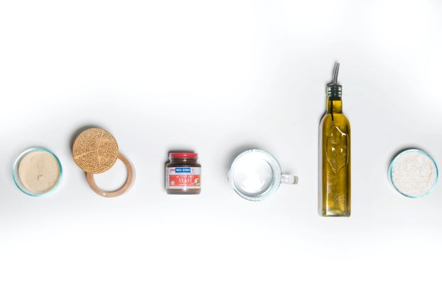
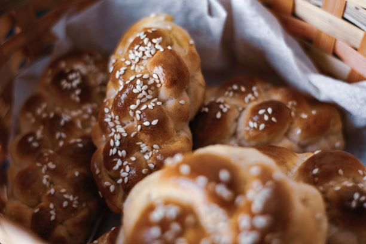
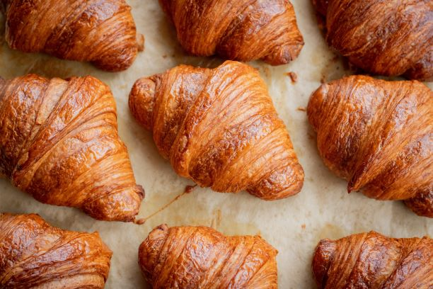

Which of these ingredients are used in baking bread?
- A.Salt
- B.Flour
- C.Water
- D.Yeast
- E. All of the above

Which of these is NOT a preferment?
- A. Biga
- B. Poolish
- C. Tanzhong
- D. Sponge
- E. Pate Fermentee

Which of the following types of bread is made with enriched dough?
- A. Challah
- B. Baguette
- C. Bagels
- D. Sourdough
- E. Pizza Dough

Where did the croissant originate from?
- A. Spain
- B. Austria
- C. Russia
- D. Germany
- E. Italy
